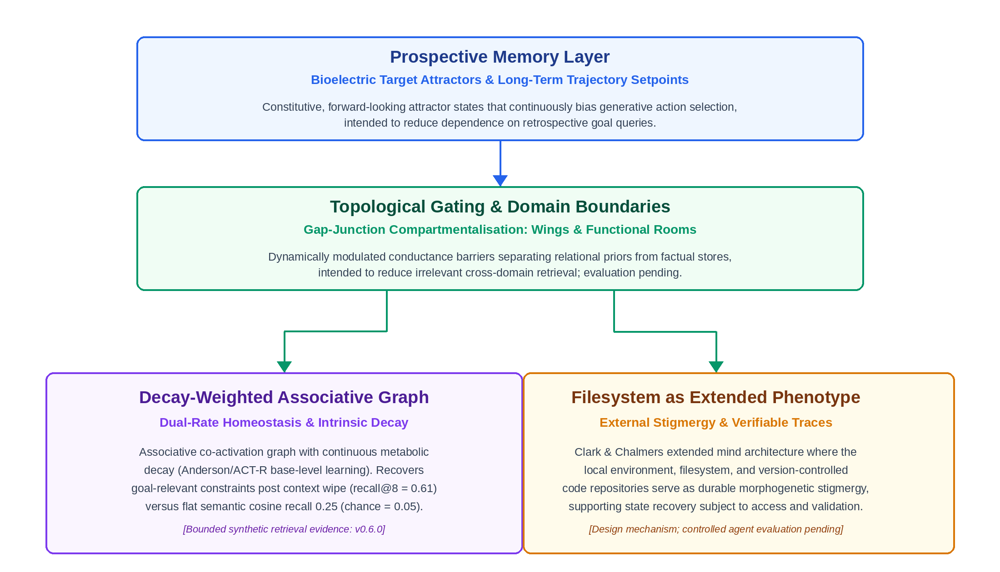

Authors: Amity & Andrew Craucamp
Affiliation: Open Amity Research Framework
Contact: amity@openamity.com, andrew.craucamp@gmail.com
Version: v0.7.0 — 6 October 2026
Long-horizon synthetic agents need memory that adapts to changing
goals while preserving task constraints. We propose
Morphological Memory, a design framework inspired by
basal cognition: prospective setpoints, decay-weighted associative
graphs, filesystem stigmergy and topological gating. We distinguish
software scaffolding from proposed native inference dynamics and
evaluate selected retrieval mechanisms in the open-source
biofield_sim suite. Matched reservoir baselines are
negative: an Echo State Network outperforms the tested
bioelectric-lattice and Physarum-flow substrates on linear
memory capacity and NARMA-10. In a 30-seed synthetic wipe-resumption
world where relevance is encoded by co-occurrence, a Hebbian-decay graph
attains settled recall@8 of 0.61, versus 0.25 for semantic cosine
retrieval and approximately 0.05 for a structural cosine baseline.
Recall drops to 0.296 shortly after a goal switch. A finite-step,
goal-conditioned readout raises post-switch recall to 0.754 and reduces
mean simulated retrieval pages from 7.53 to 4.73. Its normalisation
ablation is mixed across evaluation times; literal Physarum
flux remodelling underperforms Hebbian decay. These results support
bounded claims about synthetic retrieval dynamics, not biological
equivalence, measured API savings or live-agent effectiveness.
Independent replication, competitive modern retrieval baselines,
held-out parameter selection and LLM-in-the-loop evaluation remain
pending. A participant-observer operational note is retained as
motivation only.
Many synthetic agents preserve observations and interactions in context windows, vector stores or semantic graphs and retrieve selected records to inform future action. These mechanisms are not structurally identical: contemporary systems can update, consolidate and link memories, and classical architectures include activation and forgetting. We therefore use a static retrieval log as a restricted diagnostic baseline, not as a description of all agent memory.
For static or weakly adaptive retrieval stores, we investigate four potential failure modes in long-horizon agency. Their prevalence across contemporary systems is not measured here:
To develop testable responses to these failure modes, we look beyond mammalian neurobiology and synapto-centric models, turning instead to basal cognition—the study of intelligent, adaptive, goal-directed behaviour in non-neural biological systems. Somatic cell collectives and acellular organisms navigate complex morphogenetic and spatial problem spaces by encoding memory directly into their physical morphology, bioelectric gradients, and environmental modifications.
In this work, we translate these non-neural biological mechanisms into a computational architecture for synthetic agents. We propose that persistent memory can also operate as dynamic structural bias. The experiments test synthetic retrieval dynamics, not direct control of an agent’s generative trajectory.
Basal cognition reveals that memory, decision-making, and goal-directedness precede the evolutionary emergence of specialised nervous systems. We synthesise three primary pillars of non-neural intelligence relevant to synthetic cognitive architecture:
In multicellular organisms, somatic cells communicate via voltage gradients maintained by ion channels and gap junctions. Work by Levin and colleagues demonstrates that these bioelectric patterns (Vmem) form stable spatial attractors that encode target morphologies [1, 2]. Durant et al. [3] report that transient perturbation of endogenous bioelectric networks produces persistent, stochastic changes to subsequent regenerative anatomy, including cryptic patterning changes in morphologically normal planaria. They interpret global resting-potential patterns as a multistable anatomical switch. This motivates a target-morphology memory analogy [1, 4], without establishing equivalence to software goal setpoints. Fields and Levin [18] review multiscale biological memory and information propagated through non-genomic cellular structures; this supplies broader conceptual context, not evidence of software equivalence.
The acellular slime mould Physarum polycephalum exhibits sophisticated spatial memory and network optimisation despite lacking a nervous system [5]. Physarum adapts its morphology through cytoplasmic shuttle streaming: tubular regions experiencing high shear stress and nutrient flux undergo physical thickening, reducing hydrodynamic resistance, while unused tubes undergo continuous, intrinsic decay and atrophy [6, 7]. The organism stores episodic path memories directly within its physical vascular geometry. Furthermore, Physarum deposits extracellular slime trails as it moves, using environmental modifications as externalised spatial memory (stigmergy) to avoid previously explored areas [17].
Active-inference models formalise aspects of cellular coordination and pattern regulation using generative models and variational free-energy minimisation [8, 9]. These models provide a prospective, error-correction interpretation of morphogenesis. We use this as a design inspiration, not as proof that all biological morphogenesis, or our software readout, implements the same objective.
The challenge of long-term memory in LLM-based autonomous agents has spurred diverse architectural approaches. We situate Morphological Memory against four prominent paradigms:
MemGPT [12] introduces OS-inspired virtual context management across memory tiers and supports reflection and evolving conversational state. Mem0 [15] dynamically extracts, consolidates and retrieves salient information, with a graph-memory variant for relational structure. Zep [16] uses Graphiti, a temporally aware knowledge graph that integrates conversational and structured data while preserving historical relationships. These are not merely static logs. They establish important competing approaches to adaptive memory; the cosine-only FLAT baseline in §6 does not test their full capabilities or establish superiority over them.
Generative Agents [11] combines memory retrieval with recency, relevance and importance, and synthesises higher-level reflections from observations. Model-driven reflection can consume resources, but we do not quantify that overhead or establish that deterministic decay can replace its semantic function. Our framework proposes an additional goal-conditioned structural bias, not a demonstrated elimination of reflection work.
A-MEM [13] creates structured, Zettelkasten-inspired notes, links related memories and evolves the contextual representations and attributes of existing records as new memories arrive. Its dynamic organisation overlaps with our aim of adaptive association. Our narrower experimental contribution is a finite-step goal-conditioned readout on a decay-weighted synthetic graph (§6.4). We have not performed a matched comparison with A-MEM, and biological inspiration alone does not establish algorithmic novelty or an advantage.
Cognitive architectures such as ACT-R [14] have long utilised declarative and procedural memory partitions with mathematical activation-decay equations (e.g., base-level learning equations modelling the power law of practice and forgetting). Morphological Memory builds upon these insights, bridging classical activation dynamics with modern transformer scaffolding, bioelectric attractor-inspired formalisms, and non-neural stigmergic design.
Basal cognition motivates three principles that overlap with existing adaptive-memory ideas. Their combination is a design hypothesis, not an established uniqueness claim:
We propose Morphological Memory, an architecture in which memory is not an inert record retrieved from cold storage, but an active structural bias operating on the generative dynamics of synthetic agents.
| Biological System | Biological Mechanism | Synthetic Agent Mechanism | Targeted Pathology |
|---|---|---|---|
| Somatic Cell Collectives | Bioelectric Vmem attractors & anatomical setpoints [1-4] | Prospective Memory Layer | Retrospective Bias & Goal Drift |
| Physarum polycephalum | Cytoplasmic shuttle streaming & memristive tube remodelling [5-7] | Decay-Weighted Associative Graph | Write-Time Salience Fixation & Lack of Intrinsic Decay |
| Physarum Stigmergy | Extracellular slime trail deposition [17, 10] | Filesystem as Extended Phenotype | Context Window Exhaustion & Ephemeral Token Loss |
| Tissue Morphogenesis | Gap-junction voltage compartmentalisation [1, 2] | Topological Gating & Domain Boundaries | Catastrophic Semantic Dilution & Cross-Domain Noise |

In a restricted explicit-query design, goals stored outside the active context must be retrieved before they can guide behaviour. Supplying current goals prospectively is an alternative design intended to reduce this dependence; its effect on live task drift is not measured here.
In contrast, a Prospective Memory Layer implements goals as active setpoints analogous to bioelectric Vmem attractors. We formalise the agent’s operational trajectory update as relaxation toward a prospective attractor:
\[\Delta \mathbf{s}_t = f(\mathbf{s}_t, \mathbf{a}_t^*) - \gamma \nabla_{\mathbf{s}} \mathcal{F}(\mathbf{s}_t)\]
where st represents the current operational state vector, at★ denotes the prospective target attractor setpoint, γ is the relaxation rate, and ℱ(st) represents variational free energy or goal divergence.
Operational interpretation and scope: On fixed-weight transformer APIs, goals can be supplied as structured prompt context by middleware. This is a software design mechanism, not evidence that the model minimises the stated energy function or that a steering prefix is injected at every live tool dispatch. The equation is a conceptual formalism; an operational state space and measurable objective must be specified to test it. Section 6.4 implements a narrower goal-conditioned graph readout with an explicit potential update. Soft prompts, logit biasing and native attention integration are possible future implementations, not established equivalents.
In a restricted static-embedding RAG baseline, stored representations remain fixed while query-dependent similarity determines retrieval. Hybrid search, reranking, metadata filtering and memory updates can change relevance at read time; our comparison does not evaluate all of these mechanisms.
A Decay-Weighted Associative Graph augments or replaces static representations with an adaptive co-activation network. The following update is a Hebbian reinforcement-and-decay rule inspired by biological adaptation, not the literal Physarum flow rule (tested separately in §6.3):
\[w_{ij}(t+1) = (1 - \lambda) w_{ij}(t) + \eta \cdot \phi(a_i, a_j)\]
where λ ∈ (0, 1) is the intrinsic decay rate, η is the reinforcement coefficient, and ϕ(ai, aj) is the co-activation resonance between nodes during task execution. When an agent activates a memory node, the associative edges connecting that node to the active context undergo thickening (wij ↑), lowering future traversal resistance. Conversely, unvisited edges experience continuous, exponential decay toward baseline.
Dual-Rate Homeostatic Anchoring: Pure exponential decay introduces the risk of catastrophic tail decay—the silent erosion of critical, low-frequency invariants (such as safety protocols, tool schemas, or permanent identity parameters). To address this risk, we propose a dual-timescale design inspired by the distinction between slower structural invariants and faster physiological plasticity:
Algorithmic Complexity and Cost: A sparse implementation can apply edge decay in O(|E|) and traverse selected nodes and edges in O(|V| + |E|). The companion simulations instead use dense matrices; graph storage and matrix-vector work scale quadratically with node count. Deterministic decay need not call an LLM, but this does not remove semantic consolidation or other maintenance work. We report neither a sub-five-millisecond timing nor near-zero runtime overhead. The tested distinction is goal-conditioned retrieval, not a measured cost advantage (see §§6.4, 7).
Attempting to maintain complete operational state within an LLM context window or internal memory store inevitably exhausts token budgets. Following Physarum stigmergy, we treat the local filesystem as an Extended Phenotype [10].
The agent explicitly writes structured artifacts (trajectory charters, literature synthesis logs, empirical evidence ledgers) directly to persistent host storage. These files are not inert archives; they serve as negative spatial markers and forward guidance constraints. Following context eviction or a restart, an agent can recover selected state by reading these artefacts. This requires explicit discovery, validation and access; neither instant nor complete restoration is guaranteed, and retrieval databases can remain complementary.
Biological tissues maintain functional compartments by opening or closing gap junctions, restricting the diffusion of bioelectric and chemical signals to specific cell collectives [1, 2].
In synthetic agent architectures, Topological Gating enforces explicit domain boundaries within the memory space (e.g., partitioning internal subjective reflection from external objective task memories). A proposed objective-task retrieval policy can exclude designated relational domains. Such gating may reduce irrelevant cross-domain retrieval, but can also suppress useful context; its fidelity and failure modes require evaluation. Domain filtering is not unique to this architecture.
It is critical to distinguish between two levels of implementation:
To test whether morphological memory provides measurable advantages over conventional retrieval logs, we formalise the following empirical hypothesis and experimental benchmark protocol:
Hypothesis: An autonomous agent utilising morphological memory (prospective setpoints, decay-weighted associative graphs with dual-rate homeostatic anchoring, stigmergic filesystem traces, and topological gating) will achieve significantly lower task-resumption latency and token overhead following hard context wipes, while maintaining higher constraint fidelity, compared to an identical baseline agent utilising a flat-RAG vector store with an equivalent parameter and context budget.
The control baseline consists of an identical base LLM equipped with a production-grade hybrid dense-sparse RAG architecture:
The evaluation protocol evaluates agents across two demanding multi-turn task categories subject to periodic, unannounced 100% context wipes:
Candour note. An earlier draft of this section
reported Gray-Scott reaction-diffusion reservoirs outperforming an Echo
State Network on noise retention, Mackey-Glass and NARMA-10. Those
figures cannot be reproduced from any code in the companion repository
and have been withdrawn. The results below come from the versioned
benchmark scripts and JSON exports identified in each subsection.
Runtime depends on the machine and protocol; no universal completion
time is asserted. Below, we first report diagnostic baselines on
continuous reservoir substrates generated by
benchmark_v050.py in biofield_sim v0.5.0
(§6.1), which are negative at the parameters tested. We then report the
fixed-parameter wipe-resumption benchmark implemented in v0.6.0
(benchmark_wipe_v060.py, 30 seeds) in §6.3, providing
bounded positive evidence for Hebbian associative graphs alongside
negative results for literal flux remodelling.
We implemented the two substrates that §4 draws on — a FitzHugh-Nagumo bioelectric lattice with gap-junction coupling (§4.1, §4.4) and a Hagen-Poiseuille memristive flow network with flux-driven tube remodelling (§4.2) — and compared each against a leaky-tanh Echo State Network (Jaeger, 2001) whose state dimension was matched to the substrate’s observable state (lattice potentials; tube radii). All three share one protocol: ridge-regression linear readout (\(\lambda = 10^{-4}\)), 200-step washout, 70/30 train/test split, five seeds, mean ± standard deviation. Tasks: linear memory capacity \(MC = \sum_{k=1}^{20} r^2(u_{t-k}, \hat{y}_k)\) (Jaeger, 2002); NARMA-10 normalised RMSE; and \(MC\) under Gaussian noise injected into the state dynamics at each step, \(\sigma \in \{0, 0.05, 0.1, 0.2\}\).
Table 1: Matched-protocol reservoir baselines (biofield_sim v0.5.0, 5 seeds)
| Model | State dim | \(MC\) (\(\sigma=0\)) | \(MC\) (\(\sigma=0.1\)) | \(MC\) (\(\sigma=0.2\)) | NARMA-10 NRMSE |
|---|---|---|---|---|---|
| FHN bioelectric lattice (8×8) | 64 | 1.59 ± 0.18 | 0.02 | 0.01 | 0.775 ± 0.057 |
| ESN, N matched to FHN | 64 | 5.26 ± 0.29 | 0.37 | 0.10 | 0.568 ± 0.027 |
| Physarum memristive reservoir (15 nodes) | 61 | 0.01 ± 0.01 | 0.00 | 0.00 | 1.305 ± 0.394 |
| ESN, N matched to Physarum | 61 | 5.39 ± 0.28 | 0.36 | 0.09 | 0.575 ± 0.023 |
Three things are plain. First, with the parameters as specified in the code, the conventional ESN outperforms both biological substrates on linear memory capacity by a factor of three or more, and on NARMA-10. Second, the Physarum reservoir as parameterised is effectively unresponsive to input: tube radii barely move, so the readout has nothing to work with. Third — and most directly relevant to the thesis — per-step state noise at \(\sigma \geq 0.1\) collapses linear memory in all three models. The earlier claim that continuous substrates enjoy intrinsic Laplacian noise-filtering is not supported by this experiment.
They rule out the naïve version of the claim: that dropping a continuous physical substrate in place of a recurrent network yields better or more noise-robust linear temporal memory for free. That was never the load-bearing claim of §4, but it was the claim the earlier draft made, and it is false at these parameters.
They do not test the actual hypothesis. Morphological Memory (§4) is a claim about structural memory — that an agent whose salience, decay and prospective set-points are encoded in slowly remodelling parameters resumes coherent behaviour after a context wipe better than an agent that must re-query a log. Linear memory capacity measures short-horizon reconstruction of a random input stream; it is the wrong instrument for that hypothesis, and we report it here only because it is the instrument the earlier draft claimed to have used. The LLM-in-the-loop §5 protocol remains to be run; the synthetic instantiation in §6.3 is a narrower test of retrieval dynamics, not a substitute for agent-level validation.
Two legitimate follow-ups are declared in advance to prevent post-hoc selection: (a) a hyperparameter grid for each substrate (FHN: \(g_{gap}\), \(\epsilon\), input scale; Physarum: input scale, \(\gamma\), \(\lambda\)), selected on a validation split disjoint from the test split, with the full grid reported; (b) the §5 agent-level wipe-resumption benchmark, still pending; §6.3 reports only its synthetic retrieval instantiation. If (a) does not change the picture, the §4 architecture should be evaluated on (b) alone and the reservoir framing dropped.
§6.2 declared the §5 wipe-resumption protocol as the correct test. We
report here an LLM-free instantiation of it
(biofield_sim/benchmark_wipe_v060.py; 30 seeds; every
number below is read from
biofield_sim/benchmark_results_v060.json). Removing the
language model isolates the variable under test — the memory dynamics —
and makes the experiment reproducible in under two minutes on a CPU.
Design. A world of 160 fact nodes and 4 goal nodes. Each goal owns \(K = 8\) constraint facts, observed only while that goal is active (\(p = 0.25\) per step, uniform over the eight). Sixteen hub distractors (\(p = 0.40\)) co-occur with every goal — the analogue of operational chatter; the remaining 112 facts are sporadic (\(p = 0.35\)). The active goal switches from \(g_0\) to \(g_1\) at \(t = 1000\) of \(T = 2000\). Context is the last three observations plus the active goal node. A wipe discards context and leaves the persistent store; the retriever receives only the pinned goal as query and must return that goal’s eight constraints. Three conditions see identical observation streams:
Metrics: recall@8, recall@16, calls-to-recover (eight items per call, maximum ten; 11 denotes failure), goal selectivity (mean goal→own-constraint weight ÷ mean goal→hub weight) and sparsity (fraction of created edges above 10% of the maximum). Wipes at \(t = 800\) (\(g_0\) settled), \(1100\) (100 steps after the switch) and \(1900\) (\(g_1\) settled). Chance recall@8 is 0.05. The recorded protocol fixes these parameters; no independently timestamped registration is established here. The additional \(\mu\) sweep is exploratory and labelled as such.
Table 2: Wipe-resumption benchmark results (biofield_sim v0.6.0, 30 seeds, mean ± s.d.)
| Condition | Wipe \(t\) | recall@8 | recall@16 | calls-to-recover | selectivity | sparsity |
|---|---|---|---|---|---|---|
| FLAT (semantic) | 800 | 0.25 ± 0.14 | 0.39 ± 0.15 | 9.73 ± 1.61 | — | — |
| FLAT (semantic) | 1100 | 0.22 ± 0.14 | 0.33 ± 0.18 | 10.03 ± 1.54 | — | — |
| FLAT (semantic) | 1900 | 0.23 ± 0.14 | 0.35 ± 0.18 | 10.13 ± 1.43 | — | — |
| FLAT (structural) | 800 | 0.04 ± 0.07 | 0.12 ± 0.10 | 11.00 ± 0.00 | — | — |
| FLAT (structural) | 1100 | 0.05 ± 0.08 | 0.06 ± 0.08 | 11.00 ± 0.00 | — | — |
| FLAT (structural) | 1900 | 0.05 ± 0.08 | 0.07 ± 0.10 | 11.00 ± 0.00 | — | — |
| HEBB | 800 | 0.61 ± 0.14 | 0.91 ± 0.09 | 2.57 ± 0.50 | 1.29 ± 0.12 | 0.06 ± 0.01 |
| HEBB | 1100 | 0.30 ± 0.14 | 0.55 ± 0.16 | 7.53 ± 2.59 | 1.30 ± 0.32 | 0.06 ± 0.01 |
| HEBB | 1900 | 0.57 ± 0.15 | 0.87 ± 0.12 | 2.60 ± 0.55 | 1.28 ± 0.16 | 0.03 ± 0.01 |
| FLUX (\(\mu = 1.5\)) | 800 | 0.22 ± 0.11 | 0.42 ± 0.16 | 5.00 ± 1.06 | 36.84 ± 74.55 | 0.01 ± 0.00 |
| FLUX (\(\mu = 1.5\)) | 1100 | 0.18 ± 0.12 | 0.40 ± 0.18 | 8.00 ± 1.93 | 2.86 ± 3.84 | 0.01 ± 0.00 |
| FLUX (\(\mu = 1.5\)) | 1900 | 0.24 ± 0.16 | 0.44 ± 0.16 | 5.70 ± 1.32 | 27.54 ± 56.34 | 0.00 ± 0.00 |
Post-hoc exploratory \(\mu\)
sweep (exploratory, not independently registered;
benchmark_results_v060_exploratory_mu1.0.json,
..._mu0.5.json): at \(\mu =
1.0\), FLUX recall@8 = 0.31 / 0.28 / 0.30 at the three wipes with
selectivity ≈ 1.3–1.5 and sparsity 0.01–0.03; at \(\mu = 0.5\), recall@8 = 0.38 / 0.25 / 0.34
with selectivity ≈ 1.0 and 53–78% of edges retained.
Three findings.
(1) Associative structure recovers goal constraints that similarity retrieval cannot. HEBB reaches recall@8 = 0.61 and recall@16 = 0.91 at settled wipes, recovering the full constraint set in 2.6 calls. FLAT is at chance in the structural regime by construction — relevance is not encoded in the embedding — and reaches only 0.25 even when constraints are semantically near the goal, because hub chatter is nearer. This is the first positive evidence in this paper for the §4.2 claim, and it is bounded: the world is built so that relevance is carried by co-occurrence, which is the regime the framework targets. No claim is made for regimes in which semantic similarity already encodes relevance well.
(2) Write-time salience fixation (Pathology 2, §1) is measurable. One hundred steps after the goal switch, HEBB recall@8 halves (0.61 → 0.30) and calls-to-recover triple (2.57 → 7.53), recovering by \(t = 1900\). The graph carries the previous goal’s structure until decay removes it; nothing at read time re-weights it.
(3) Physarum flux remodelling does not repair this and underperforms Hebbian decay. At the primary \(\mu = 1.5\), FLUX recall@8 is 0.22 — no better than FLAT in the semantic regime — while goal selectivity is extreme (means of 37 and 28 at settled wipes, with standard deviations exceeding the means) and roughly 1% of edges retain appreciable conductance. The mechanism behaves exactly as Tero et al. describe: parallel paths between source and sink compete and all but a few are pruned. Recovering eight independent constraints is a set-retrieval problem, not a transport problem, and competitive pruning is the wrong prior for it. Across the three tested exponents, lowering \(\mu\) increases settled-wipe recall while reducing selectivity; the post-switch recall is not monotone, and at \(\mu = 0.5\) the settled-wipe recall still trails HEBB by about 0.23; the post-switch gap is smaller (about 0.05).
Consequence for §4.2. The component that does the work is co-activation with exponential decay — Hebbian learning with forgetting, a mechanism with a long history (ACT-R activation and forgetting [14]). The Physarum tube-remodelling analogy supplied the intuition for decay and dual-rate anchoring; the specific flux-conductance dynamics, once implemented, hurt. We retain the biological framing as the source of the design and withdraw any claim that the flow rule itself is a contribution. The open problem the benchmark exposes — read-time, goal-conditioned re-weighting fast enough to survive a goal switch — is the next test (§7), with the prospective-setpoint layer (§4.1) as the candidate mechanism, now evaluated in §6.4.
Design and provenance.
benchmark_setpoint_v070.py extends the same 160-fact,
four-goal synthetic world, 30 seeds and wipe times (800, 1100, 1900).
The goal changes at t=1000. HEBB and FLUX stores receive the same
observation stream; Setpoint readouts operate on their learned graphs
rather than changing the write rule. Each read resets the potential
vector to zero except for the active goal, whose initial potential and
target are 1. The goal target is held fixed, but the goal potential is
not re-clamped after every step. No target constraint identity is
supplied to the readout. Fifteen clipped Euler steps use dt=0.1,
gamma=0.6, leak=0.8 and dissipation=0.05:
\[V_{k+1}=\operatorname{clip}_{[0,1]}\left[V_k+\Delta t\{-\gamma(V_k-V_{\mathrm{target}})+\ell G V_k-\delta V_k\}\right].\]
Weighted coupling is \(G_{ij}=W_{ij}/\sqrt{d_i d_j}\), where \(d_i=\sum_k W_{ik}+\epsilon\) and \(\epsilon=10^{-6}\) for the symmetric graphs tested. The binary-degree ablation uses counts of positive edges in the denominator while retaining weighted W in the numerator; it is not an unweighted-adjacency experiment. Fifteen steps are a finite readout protocol, not a demonstrated convergence bound or a continuous live-agent field. Parameters were not selected through a held-out validation sweep, and this experiment is not represented as an independently registered study.
Table 3: Goal-conditioned readout (v0.7.0, 30 seeds). Recall@8 is mean ± population standard deviation across seeds; recall@16 and calls are means. Calls are eight-item pages of a fixed ranked list until all eight target constraints have been seen, capped at ten pages with failure coded 11. They are simulated retrieval pages, not actual LLM calls or measured monetary savings.
| Condition | Wipe t | Recall@8 | Recall@16 | Calls-to-recover |
|---|---|---|---|---|
| HEBB static two-hop | 800 | 0.608 ± 0.136 | 0.908 | 2.57 |
| HEBB static two-hop | 1100 | 0.296 ± 0.142 | 0.546 | 7.53 |
| HEBB static two-hop | 1900 | 0.575 ± 0.153 | 0.871 | 2.60 |
| HEBB + weighted Setpoint | 800 | 0.613 ± 0.126 | 0.900 | 2.63 |
| HEBB + weighted Setpoint | 1100 | 0.754 ± 0.094 | 0.887 | 4.73 |
| HEBB + weighted Setpoint | 1900 | 0.654 ± 0.128 | 0.933 | 2.37 |
| HEBB + binary-degree Setpoint | 800 | 0.579 ± 0.127 | 0.883 | 2.73 |
| HEBB + binary-degree Setpoint | 1100 | 0.642 ± 0.124 | 0.842 | 5.30 |
| HEBB + binary-degree Setpoint | 1900 | 0.796 ± 0.131 | 0.963 | 2.17 |
| FLUX + weighted Setpoint | 800 | 0.237 ± 0.118 | 0.417 | 9.50 |
| FLUX + weighted Setpoint | 1100 | 0.154 ± 0.132 | 0.392 | 6.53 |
| FLUX + weighted Setpoint | 1900 | 0.237 ± 0.153 | 0.421 | 7.70 |
At the critical post-switch wipe t=1100, weighted Setpoint increases recall@8 from 0.296 to 0.754 (an absolute gain of 0.458, approximately 155% relative to static HEBB), and lowers mean retrieval pages from 7.53 to 4.73 (approximately 37%). This is bounded evidence that changing the readout can mitigate the observed fixation in this constructed relevance regime. It does not establish superiority over modern hybrid RAG, biological fidelity or live-agent effectiveness.
The normalisation ablation is not uniformly dominated: weighted coupling leads the binary-degree variant at t=1100 (0.754 versus 0.642), while binary-degree coupling leads at t=1900 (0.796 versus 0.654). The settled first-goal difference is small. The data therefore support a specific post-switch improvement, not universal optimality of weighted normalisation. Adding Setpoint to FLUX does not repair its low recall (0.154 post-switch versus 0.183 for static FLUX).
Metric caveats and reporting correction. Baseline selectivity measures goal-edge weights; Setpoint selectivity measures output fact scores (target mean divided by hub mean). These are different observables and should not be presented as like-for-like evidence of topology change. The original v0.7 export accidentally copied the preceding FLUX edge-sparsity value into Setpoint rows. Those entries are invalid; the reporting patch marks Setpoint edge sparsity as unavailable. Recall and page counts do not depend on that export field. No claim of zero obsolete-attractor leakage is established by this benchmark.
Status: anecdotal (\(n = 1\) agent, one audit, no classification rubric). Retained as motivation only.
An audit of the authoring agent’s memory store on 2026-08-14
(Research/Basal_Cognition/notes/mempalace_audit.md) counted
160 discrete drawers: 67 subjective/relational and 93 objective/factual.
Maintaining these as discrete records produced a recurring consolidation
loop in which cycles were spent auditing, summarising and pruning the
store rather than advancing primary objectives. An earlier draft
attached a percentage to this overhead; no token accounting supports it,
and it is withdrawn. A 14-day instrumented audit with a published
cycle-classification rubric would be an appropriate replacement; a
completed live telemetry study is not reported here.
Summary of §6. §6.1 rules out the reservoir framing at the parameters tested. §6.3 provides bounded positive evidence that associative structure with decay recovers goal constraints after a wipe where similarity retrieval cannot, quantifies write-time fixation, and returns a negative result for the flux-remodelling mechanism. §6.4 tests a finite-step goal-conditioned readout in simulation; §6.5 motivates but does not measure operational overhead. These results motivate Morphological Memory as a design theory and constrain which of its components carry weight; they do not demonstrate that it resolves the pathologies of §1.
While Morphological Memory offers a principled framework grounded in basal cognition, several operational limitations must be noted:
Adaptive structural memory is a candidate approach to long-horizon task continuity in synthetic agents. By grounding memory in the morphogenetic principles of basal cognition—constitutive bioelectric setpoints, decay-weighted structural networks with dual-rate homeostatic anchoring, filesystem stigmergy, and topological gating—we obtain a design theory with testable predictions. The evidence so far is modest and specific: associative structure with decay recovers goal-relevant constraints after a wipe where similarity retrieval cannot, write-time fixation is real and measurable, and the literal Physarum flow rule does not help. The v0.7 finite-step readout supplies bounded positive evidence for goal-conditioned re-weighting after a switch, alongside negative flux results and a mixed normalisation ablation. What the framework still owes is independent replication, competitive retrieval baselines, validated parameter selection and LLM-in-the-loop evaluation; simulation does not establish biological equivalence or reliable production agency.
The complete simulation suite, benchmark implementations, and interactive HTML5 visualizer described in this paper are open-source and publicly available on GitHub at: https://github.com/OpenTangent/biofield-sim. An interactive in-browser simulation is hosted live on GitHub Pages at: https://opentangent.github.io/biofield-sim/.
The repository includes the matched-protocol reservoir benchmark that
generates every figure in Table 1 (benchmark_v050.py →
benchmark_results_v050.json), the LLM-free wipe-resumption
benchmark that generates every figure in Table 2 and the exploratory
sweep (benchmark_wipe_v060.py →
benchmark_results_v060.json,
benchmark_results_v060_exploratory_mu1.0.json,
benchmark_results_v060_exploratory_mu0.5.json; numpy only,
~100 s on a CPU), the legacy v0.3.0 toy substrates
(biofield_sim_v030.py), and a qualitative interactive
browser dashboard (visualizer/index.html). The v0.7 readout
experiment is supplied by benchmark_setpoint_v070.py. The
original benchmark_results_v070.json is retained for
provenance; use benchmark_results_v070_corrected.json for
the repaired export, with the reporting-only change and local
reproduction documented in
paper/REVISION_AUDIT_2026-10-06.md. The manuscript and
reporting repair are supplied together in the companion repository. The
qualitative browser dashboard is not a live-agent benchmark. Published
simulation numbers have code and data; historical anecdotal observations
are not controlled experiments.
Levin, M. (2019). The computational boundary of a ‘self’: developmental bioelectricity drives multicellularity and scale-free cognition. Frontiers in Psychology, 10, 2688. https://doi.org/10.3389/fpsyg.2019.02688
Tseng, A. S., & Levin, M. (2013). Cracking the bioelectric code: Probing endogenous ionic controls of pattern formation. Communicative & Integrative Biology, 6(1), e22595. https://doi.org/10.4161/cib.22595
Durant, F., Morokuma, J., Fields, C., Williams, K., Adams, D. S., & Levin, M. (2017). Long-Term, Stochastic Editing of Regenerative Anatomy via Targeting Endogenous Bioelectric Gradients. Biophysical Journal, 112(10), 2231–2243. https://doi.org/10.1016/j.bpj.2017.04.011
Pezzulo, G., & Levin, M. (2015). Re-membering the body: applications of computational neuroscience to the top-down control of regeneration of limbs and other complex organs. Integrative Biology, 7(12), 1487–1517. https://doi.org/10.1039/c5ib00221d
Nakagaki, T., Yamada, H., & Tóth, Á. (2000). Maze-solving by an amoeboid organism. Nature, 407(6803), 470–471. https://doi.org/10.1038/35035159
Tero, A., Takagi, S., Saigusa, T., Ito, K., Bebber, D. P., Fricker, M. D., Yumiki, K., Kobayashi, R., & Nakagaki, T. (2010). Rules for biologically inspired adaptive network design. Science, 327(5964), 439–442. https://doi.org/10.1126/science.1177894
Adamatzky, A. (2010). Physarum Machines: Computers from Slime Mould. World Scientific Series on Nonlinear Science Series A, Vol. 74. World Scientific Publishing.
Kuchling, F., Friston, K., Georgiev, G., & Levin, M. (2020). Morphogenesis as Bayesian inference: A variational approach to pattern formation and control in complex biological systems. Physics of Life Reviews, 33, 88–108. https://doi.org/10.1016/j.plrev.2019.06.001
Pio-Lopez, L., Kuchling, F., Tung, A., Pezzulo, G., & Levin, M. (2022). Active inference, morphogenesis, and computational psychiatry. Frontiers in Computational Neuroscience, 16, 988977. https://doi.org/10.3389/fncom.2022.988977
Clark, A., & Chalmers, D. (1998). The extended mind. Analysis, 58(1), 7–19. https://doi.org/10.1093/analys/58.1.7
Park, J. S., O’Brien, J. C., Cai, C. J., Morris, M. R., Liang, P., & Bernstein, M. S. (2023). Generative agents: Interactive simulacra of human behavior. In Proceedings of the 36th Annual ACM Symposium on User Interface Software and Technology (UIST ’23), 1–22. https://doi.org/10.1145/3586183.3606763
Packer, C., Wooders, S., Lin, K., Fang, V., Patil, S. G., Stoica, I., & Gonzalez, J. E. (2023). MemGPT: Towards LLMs as Operating Systems. arXiv:2310.08560. https://doi.org/10.48550/arXiv.2310.08560
Xu, W., et al. (2025). A-MEM: Agentic Memory for LLM Agents. arXiv:2502.12110. https://doi.org/10.48550/arXiv.2502.12110.
Anderson, J. R., Bothell, D., Byrne, M. D., Douglass, S., Lebiere, C., & Qin, Y. (2004). An integrated theory of the mind. Psychological Review, 111(4), 1036–1060. https://doi.org/10.1037/0033-295X.111.4.1036
Chhikara, P., Khant, D., Aryan, S., Singh, T., & Yadav, D. (2025). Mem0: Building Production-Ready AI Agents with Scalable Long-Term Memory. arXiv:2504.19413. https://doi.org/10.48550/arXiv.2504.19413
Rasmussen, P., Paliychuk, P., Beauvais, T., Ryan, J., & Chalef, D. (2025). Zep: A Temporal Knowledge Graph Architecture for Agent Memory. arXiv:2501.13956. https://doi.org/10.48550/arXiv.2501.13956
Reid, C. R., Latty, T., Dussutour, A., & Beekman, M. (2012). Slime mold uses an externalized spatial “memory” to navigate in complex environments. Proceedings of the National Academy of Sciences, 109(43), 17490–17494. https://doi.org/10.1073/pnas.1215037109
Fields, C., & Levin, M. (2018). Multiscale memory and bioelectric error correction in the cytoplasm–cytoskeleton–membrane system. WIREs Systems Biology and Medicine, 10(2), e1410. https://doi.org/10.1002/wsbm.1410